Instalação do Mysql
O Mysql pode ser baixado direto pelo link: http://downloads.mysql.com/archives/community/
A versão utilizada neste curso é a 5.5.41 e é Gratuita.
Após feito o Download, siga os passos abaixo:
1 - Clique duas vezes no arquivo de instalação
2 - Nas próximas telas, clique conforme destaque em amarelo.


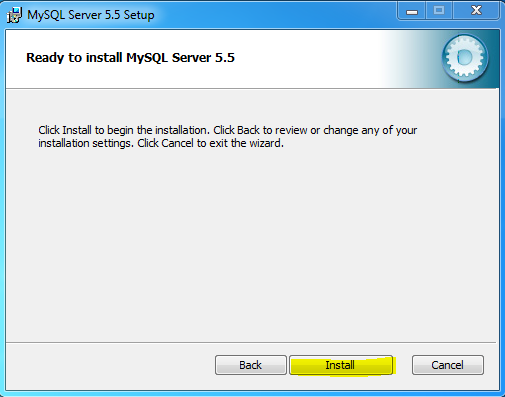
3 - Será exibida uma nova tela de Informações sobre o Mysql, clique em Next em todas até finalizar.
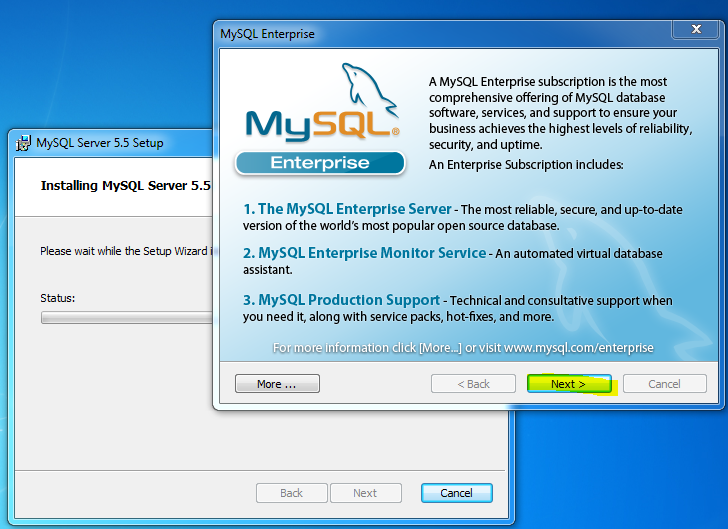
4 - Instalação Finalizada, clique em Finish conforme imagem abaixo:
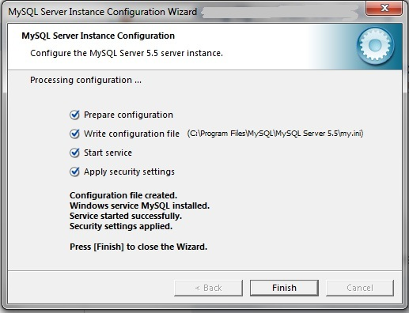
5 - Agora vamos configurar a Instalação, a próxima tela é a mostrada abaixo:
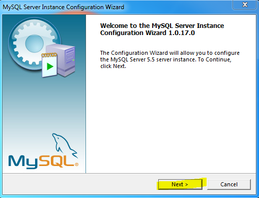
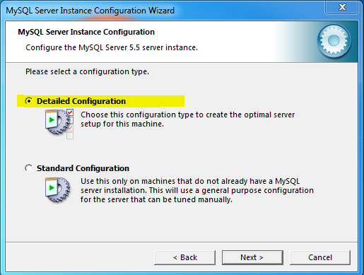

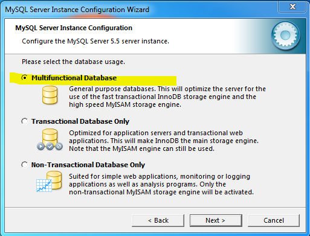
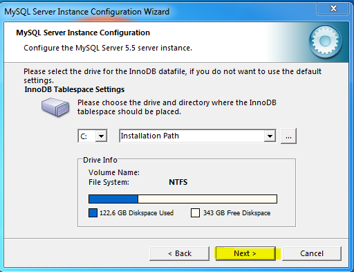

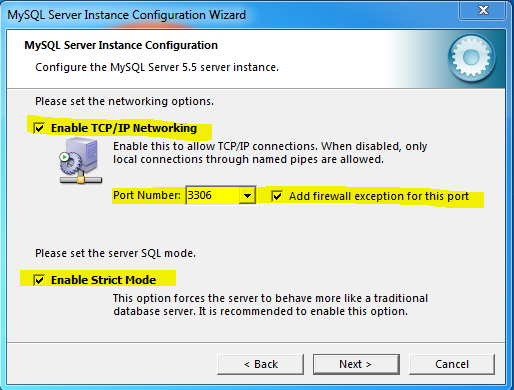


6 - Na tela abaixo informe uma senha caso necessite. Vou deixar em branco, desmarcado.
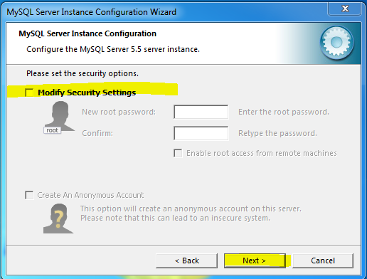
7 - Depois é só clicar em Execute e aguardar finalizar a instalação.

8 - Depois clique no iniciar e digite Mysql - deve aparecer o Mysql Command Client Line, que será o terminal utilizado neste curso.
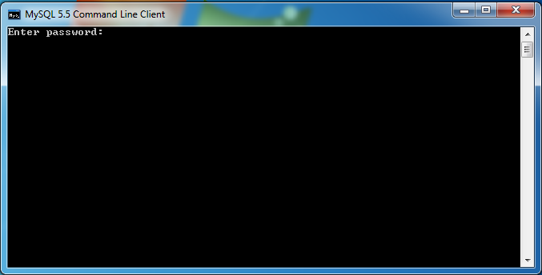
9 - Digite a senha que cadastrou na instalação ou pressione Enter se deixou sem senha.
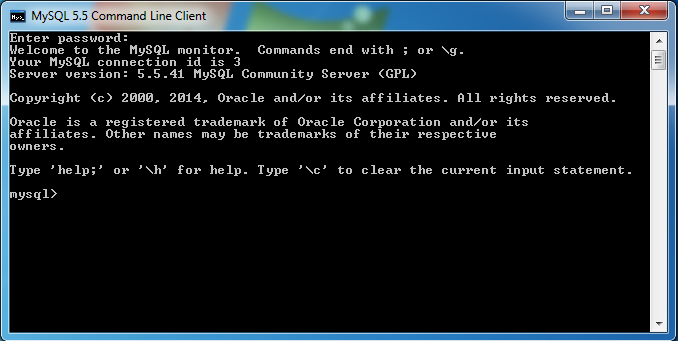
10 - Agora estamos prontos para começar nosso aprendizado, acesse a Aula 1.